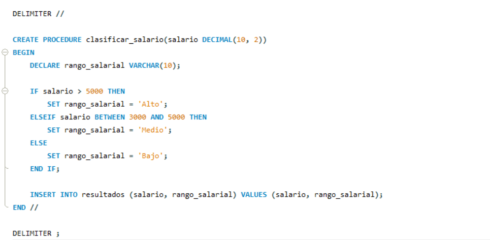

If, Then, Else

La estructura `if-then-else` permite ejecutar diferentes bloques de código según una condición. Es fundamental en la toma de decisiones en programación.
Explorando las estructuras de control en programación
La estructura `if-then-else` permite ejecutar diferentes bloques de código según una condición. Es fundamental en la toma de decisiones en programación.
La estructura `repeat` se utiliza para ejecutar un bloque de código varias veces hasta que se cumpla una condición específica.
Los bucles (`loops`) permiten repetir un bloque de código múltiples veces. Existen varios tipos, como `for`, `while` y `do-while`.
El bucle `while` ejecuta un bloque de código mientras una condición sea verdadera. Es útil para situaciones donde no se conoce de antemano el número de iteraciones.